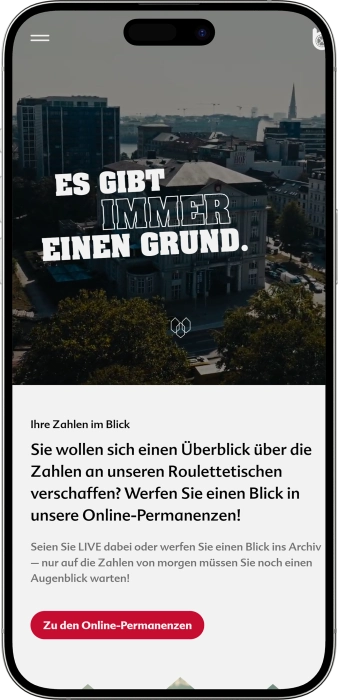
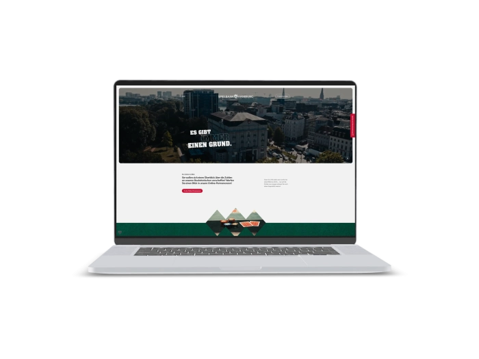

Exklusives Willkommensangebot von
Exklusives Willkommensangebot von
pielbank Hamburg — Casino mit Roulette, Black Jack, Poker, Automaten, Jackpots und Live-Events
Top-Casino
Bonusdetails
Casino
Boni
Rate
Frei Spins
Mehr Infos
Erhalten
Vorteile
- In der Spielbank Hamburg verbinden wir klassisches Casinoflair, moderne Automaten, Live-Events und persönlichen Service.
-
Jackpots erreichen attraktive aktuelle Gewinnsummen.
-
Roulette bietet Auszahlungen bis fünfunddreißig zu eins.
-
Event-Boni verbinden Glücksjetons und Willkommensdrink.
-
Automaten bieten Bonusspiele und abwechslungsreiche Themen.
-
Poker begrüßt Einsteiger und erfahrene Spieler.
-
Vier Standorte schaffen flexible Besuchsmöglichkeiten.
-
Esplanade verbindet Stil, Spannung und Atmosphäre.
- Unser Casino steht für Spielauswahl, zentrale Standorte, elegante Abendstimmung und besondere Erlebnisse rund um Bar, REDBLACK Lounge, Konzerte und ausgewählte Specials.
Spielbank Hamburg App



Über das Spielbank Hamburg
Die Spielbank Hamburg überzeugt mit klassischem Spiel, modernen Automaten und aktuellen Jackpotständen an mehreren Standorten. Wir verbinden Casinospannung mit Events, Bars, Lounge-Erlebnis und attraktiven Vorteilen für Veranstaltungsgäste.
- Jackpots bis 45.115 €.
- Event-Bonus 6 €.
- Roulette zahlt 35:1.
Die Spielbank Hamburg ist unser Casino für Gäste, die Atmosphäre, Stil und echte Spielauswahl schätzen. Wir verbinden klassisches Spiel, moderne Automaten, Pokerflair und besondere Lounge-Events. Im Casino Esplanade erleben unsere Gäste die elegante Seite einer traditionsreichen Spielbank mit zeitgemäßem Service. Unsere Spielbereiche eignen sich für erfahrene Spieler ebenso wie für Gäste, die Casino-Atmosphäre neu entdecken möchten.

Wir legen Wert auf einen klaren Empfang, angenehme Betreuung und eine gepflegte Umgebung. Die Barbereiche machen den Besuch entspannt, gesellig und rund. Unser Eventprogramm bringt regelmäßig Konzerte, Clubabende, saisonale Highlights und besondere Formate ins Haus. Poker, Roulette, Black Jack und Automatenspiel eröffnen unterschiedliche Möglichkeiten für einen spannenden Abend. Wir stehen für Atmosphäre, Qualität, Verlässlichkeit und verantwortungsvoll organisiertes Spiel. Die Spielbank Hamburg macht aus einem Casinobesuch ein Erlebnis mit Stil.
Spielbank Hamburg: Öffnungszeiten, Zahlungsmethoden und Treueprogramm
Spielbank Hamburg: Stilvoller Casinoabend im Casino Esplanade und an drei weiteren Standorten
Die Spielbank Hamburg ist unser Casino für Gäste, die klassisches Spiel, moderne Automaten und ein gepflegtes Ausgeherlebnis verbinden möchten. Im Casino Esplanade schaffen wir eine besondere Abendatmosphäre mit Roulette, Black Jack, Poker, Automatenspiel, Barbereichen und der REDBLACK Lounge. Im Automatenspiel erleben unsere Gäste moderne Slots, Bonusfunktionen, abwechslungsreiche Themen und aktuelle Jackpotstände. Das Klassische Spiel im Esplanade beginnt am Abend und richtet sich an Gäste, die Live-Spiel, Croupiers, Strategie und echtes Casinoflair schätzen. Die REDBLACK Lounge nutzen wir für Konzerte, DJ-Sets, Club Nights, saisonale Abende und besondere Shows. Unsere Bars ergänzen den Besuch mit Drinks, Cocktails, kleinen Speisen und entspannten Pausen zwischen den Spielen. Für Gruppen bieten wir ausgewählte Formate, Spielerklärungen und Abende, bei denen Casino, Unterhaltung und gemeinsames Erlebnis zusammenkommen. Durch unsere zentralen Standorte lässt sich der Besuch bequem mit Dinner, Stadtbummel, Hotelaufenthalt oder einem ganzen Abendprogramm verbinden. Veranstaltungsgäste profitieren je nach Event von Willkommensdrinks, Glücksjetons, Menüaktionen und saisonalen Specials. Über unseren Newsletter bleiben Gäste über neue Termine, Neuigkeiten und exklusive Rabatte informiert. Die Spielbank Hamburg steht für Spielauswahl, Gastfreundschaft, Atmosphäre und ein vielseitiges Erlebnis mit urbanem Charakter.
| Zone | Tage | Zeit |
|---|---|---|
| Casino Esplanade — Automatenspiel | Täglich | 12:00–04:00 Uhr |
| Casino Esplanade — Klassisches Spiel | Täglich | ab 17:00 Uhr |
| Casino Esplanade — Pokerfloor | Nach Spielplan | Beginn ca. 18:45 Uhr |
| Casino Esplanade — REDBLACK Lounge | An Eventtagen | Nach Veranstaltung |
| Casino Reeperbahn — Automatenspiel | Täglich | 14:00–04:00 Uhr |
| Casino Mundsburg — Automatenspiel | Täglich | 10:00–24:00 Uhr |
| Casino Steindamm — Automatenspiel | Täglich | 10:00–24:00 Uhr |
Spielbank Hamburg — Service, Zahlung, Währung und Gewinnauszahlung
In der Spielbank Hamburg legen wir großen Wert auf einen freundlichen Empfang, klare Orientierung und eine angenehme Begleitung während des gesamten Besuchs. Unser Team unterstützt Gäste beim Check-in, bei der Eintrittskarte, bei Fragen zu Spielbereichen, Bars, Pokerfloor und Veranstaltungen. Im Casino Esplanade finden Gäste das Automatenspiel im Erdgeschoss, während Klassisches Spiel, Pokerfloor und REDBLACK Lounge im oberen Bereich liegen. Die wichtigste Sprache im Gästekontakt ist Deutsch, zugleich unterstützen wir internationale Gäste nach Möglichkeit auch auf Englisch und mit klarer, praktischer Kommunikation. Für den Besuch sollte immer ein gültiger Reisepass oder ein offizielles Ausweisdokument mitgebracht werden.
Unsere zentrale Währung ist der Euro, deshalb werden Eintritt, Jetons, Spieleinsätze, Barumsätze und Auszahlungen in Euro abgewickelt. An unseren Bars können Gäste bequem mit Karte oder Bargeld bezahlen. Jetons für das Klassische Spiel geben wir gegen Bargeld aus, dafür stehen im Casino Esplanade Geldautomaten im Haus zur Verfügung. Auch in den Standorten Reeperbahn, Mundsburg und Steindamm befinden sich Geldautomaten, sodass der Besuch unkompliziert geplant werden kann. Einen Währungswechsel empfehlen wir vor dem Casinobesuch über Bank- oder Reiseservices, damit der Abend direkt und entspannt beginnen kann.
Die Auszahlung eines Gewinns erfolgt in der Spielbank Hamburg über klare Kassenprozesse und nach Prüfung des jeweiligen Spielergebnisses. An den Tischen wird nach den Regeln des Spiels ausgezahlt, beim Roulette kann eine Plein-Wette beispielsweise bis zu fünfunddreißig zu eins plus Einsatz zurückbringen. Im Automatenspiel wird der Gewinn technisch erfasst und anschließend nach den Abläufen vor Ort ausgezahlt. Bei höheren Beträgen können zusätzliche Identitäts- und Sicherheitsprüfungen notwendig sein, damit die Auszahlung transparent und korrekt dokumentiert ist. Unser Ziel ist ein ruhiger, nachvollziehbarer und gastfreundlicher Ablauf.
Für private Gäste gelten Casinogewinne in der Regel als Spielergebnis und werden bei der Auszahlung üblicherweise nicht als Einkommensteuer einbehalten. Individuelle Fälle können anders bewertet werden, etwa bei professioneller Spieltätigkeit, regelmäßigen Einkünften aus Spiel oder späteren Kapitalerträgen aus angelegten Gewinnen. Wir empfehlen, Unterlagen zu größeren Auszahlungen aufzubewahren, damit die Herkunft des Geldes bei Bedarf nachvollziehbar bleibt. In der Spielbank Hamburg setzen wir auf Transparenz, korrekte Identifikation und einen professionellen Kassenservice. So bleibt der Fokus auf einem angenehmen und sicheren Casinoerlebnis.
Spielbank Hamburg — Besuchsregeln, Dresscode und komfortable Anreise
In der Spielbank Hamburg schaffen wir eine Atmosphäre, in der Gäste sich vom ersten Moment an willkommen und sicher fühlen. Für den Besuch ist ein Mindestalter von achtzehn Jahren erforderlich. Beim Check-in benötigen wir einen gültigen Reisepass oder ein offizielles Ausweisdokument. Ein Führerschein reicht für den Zutritt nicht aus. Nach der Registrierung erhalten Gäste ihre Eintrittskarte und Zugang zu den jeweiligen Spielbereichen. Im Casino Esplanade ist das Automatenspiel klar vom Klassischen Spiel getrennt, sodass der passende Abendstil leicht gewählt werden kann. Für das Klassische Spiel und unsere Lounge-Events begrüßen wir besonders Smart Casual und gepflegte Abendkleidung. In den Automatenstandorten ist gepflegte Freizeitkleidung willkommen. Entscheidend ist ein Erscheinungsbild, das zur Atmosphäre einer Spielbank passt. Sport-, Strand-, Arbeitskleidung, Jogginghosen und sehr legere Kleidung passen nicht zu unserem Anspruch. Bei Themenveranstaltungen können besondere Hinweise gelten, etwa bei Kostümen ohne vollständige Gesichtsverdeckung. Alle Standorte sind gut erreichbar und lassen sich bequem mit einem Abendprogramm verbinden.
Dresscode in der Spielbank Hamburg
- • Im Casino Esplanade passen Smart Casual, Hemd, Sakko, Kleid, gepflegte Abendmode und stilvolle Freizeitkleidung besonders gut.
- • In den Automatenstandorten Reeperbahn, Mundsburg und Steindamm begrüßen wir gepflegte Freizeitkleidung.
- • Kurze Hosen, Jogginghosen, Sport-, Strand- und Arbeitskleidung entsprechen nicht der gewünschten Casinoatmosphäre.
- • Für REDBLACK Lounge Events empfehlen wir ein Outfit, das zum Abend, zur Musik und zum besonderen Rahmen passt.
Zutritt zur Spielbank Hamburg
- • Der Zutritt ist ab achtzehn Jahren möglich.
- • Für den Check-in ist ein gültiger Reisepass oder ein offizielles Ausweisdokument erforderlich.
- • Nach der Registrierung erhalten Gäste eine Eintrittskarte für den jeweiligen Spielbereich.
- • Der reguläre Eintritt beträgt im Casino Esplanade 2 € und in Reeperbahn, Mundsburg sowie Steindamm 1 €.
- • Für besondere Veranstaltungen kann zusätzlich ein Eventticket erforderlich sein.
Verhalten und Sicherheit in der Spielbank Hamburg
- • Wir legen Wert auf eine respektvolle, ruhige und sichere Atmosphäre in allen Spielbereichen.
- • Gäste mit bestehender Spielsperre nehmen nicht am Spiel teil.
- • Der Zutritt setzt eine erfolgreiche Identifikation am Empfang voraus.
- • Bei größeren Vorgängen können zusätzliche Identitäts- und Sicherheitsprüfungen durchgeführt werden.
- • Bei Mottoevents muss das Gesicht der Gäste jederzeit erkennbar bleiben.
Anreise und Parken zur Spielbank Hamburg
- • Das Casino Esplanade erreichen Gäste bequem über Stephansplatz oder Dammtor; Parkplätze stehen im Haus begrenzt zur Verfügung.
- • Das Casino Reeperbahn liegt nahe St. Pauli; das Parkhaus Millerntorhochhaus befindet sich direkt unter dem Casino.
- • Das Casino Mundsburg ist gut über Mundsburg erreichbar und mit dem Parkhaus des Mundsburg Centers verbunden.
- • Das Casino Steindamm liegt nah am Hauptbahnhof und eignet sich besonders für die Anreise mit öffentlichen Verkehrsmitteln.
- • Alle Standorte lassen sich ideal mit Dinner, Barbesuch, Konzert oder einem kompletten Abendprogramm kombinieren.
Spielbank Hamburg — Vorteile, Gästebindung und Bonusformate
In der Spielbank Hamburg gestalten wir Gästebindung über regelmäßige Vorteile, persönliche Information, Event-Boni und einen aufmerksamen Service. Unser Vorteilssystem setzt auf klare Teilnahmeformate: Newsletter-Gast, Eventgast, Gruppengast, Pokergast und regelmäßiger Besucher unserer Standorte. Dadurch bleiben Vorteile einfach verständlich und direkt erlebbar. Über den Newsletter informieren wir über neue Konzerte, Lounge-Abende, saisonale Highlights, Specials und exklusive Rabatte. Bei vielen Veranstaltungen bieten wir einen Vorverkaufsvorteil: Gäste, die im angegebenen Zeitraum erscheinen, erhalten Glücksjetons im Wert von 6 € sowie einen Willkommensdrink. Bei Themenabenden können zusätzliche Specials wie Halloween-Jetons oder saisonale Vorteile hinzukommen. Für Gruppen ab sechs Personen gestalten wir organisierte Abende mit Eintritt, Begrüßungsgetränk und Spielerklärung. In ausgewählten Gruppenformaten kann ein Glücksjeton im Wert von 2 € enthalten sein. Für Pokergäste ist die Reservierungsmöglichkeit für Cash-Game-Plätze ein besonders praktischer Vorteil. Regelmäßige Gäste schätzen außerdem aktuelle Jackpotstände, Eventinformationen, Barangebote und die flexible Auswahl unserer Standorte. In der Spielbank Hamburg bedeutet Loyalität ein lebendiges Zusammenspiel aus Service, Atmosphäre, Information und besonderen Momenten.
Registrierung für Vorteile in der Spielbank Hamburg
- • Newsletter-Anmeldung: Der einfache Weg zu Neuigkeiten, Eventinformationen und exklusiven Rabatten.
- • Casinobesuch: Erforderlich sind ein Mindestalter von achtzehn Jahren und ein gültiger Reisepass oder ein offizielles Ausweisdokument.
- • Eventvorteile: Für viele Boni wird ein gültiges Veranstaltungsticket und das Erscheinen im angegebenen Zeitfenster benötigt.
- • Gruppenangebote: Für organisierte Gruppenabende gilt in der Regel eine Mindestgröße ab sechs Personen.
- • Pokerreservierung: Cash-Game-Plätze können täglich und frühestens sieben Tage im Voraus angefragt werden.
Teilnahmeformate und Zugang
- • Newsletter Guest: Anmeldung zum Newsletter und regelmäßige Informationen zu Events, Specials und Rabatten erhalten.
- • Event Guest: Ticket für Konzert, Club Night, Jazz Night oder saisonales Event buchen und das Bonuszeitfenster nutzen.
- • Group Guest: Gruppenabend ab sechs Personen planen und von Begrüßungsdrink sowie Spielerklärung profitieren.
- • Poker Guest: Pokerfloor wählen, Check-in durchführen und Cash-Game-Platz rechtzeitig reservieren.
- • Regular Guest: Unsere Standorte regelmäßig besuchen, Jackpotstände verfolgen und neue Eventformate entdecken.
Boni und Vorteile der Spielbank Hamburg
- • 6 € Glücksjetons: Häufiger Vorverkaufsvorteil bei ausgewählten Veranstaltungen im angegebenen Zeitfenster.
- • Willkommensdrink: Stimmiger Auftakt für Konzert, Club Night, Jazz Night oder Special Event.
- • 2 € Glücksjeton: Möglicher Bestandteil ausgewählter Gruppenangebote und Spielerklärungen.
- • Freier Eintritt: Vorteil bei besonderen Genussformaten wie dem Roulette Menü.
- • Begrüßungssekt und Hauspräsent: Zusätzliche Wertschätzung in ausgewählten Restaurant- und Casinoformaten.
- • Aktuelle Jackpots: Automatenspiel mit Gewinnsummen, die je nach Stand deutlich in den fünfstelligen Bereich reichen können.
- • Pokerreservierung: Praktischer Planungsvorteil für Cash-Game-Gäste.
- • Exklusive Newsletter-Rabatte: Vorteile für Gäste, die neue Angebote frühzeitig entdecken möchten.
Softwareanbieter
Unterhaltung und Gaming im Spielbank Hamburg
Spielbank Hamburg — Boni, Gewinne, Specials und saisonale Highlights
In der Spielbank Hamburg sind besondere Vorteile eng mit Events, Spielformaten, Jackpots und Themenabenden verbunden. Wir gestalten Angebote, die den Besuch noch erlebnisreicher machen: Willkommensdrink, Glücksjetons, saisonale Jetons, Genussformate und festliche Programme. Im Automatenspiel können Gäste aktuelle Jackpotstände verfolgen, die je nach Spielsystem deutlich in den fünfstelligen Bereich reichen. Zu den auffälligen Slot-Systemen gehören unter anderem Clover Link Xtreme, Bell Link, Super Link, Cash Connection, Golden Link und Black Impera. Für Konzert- und Loungegäste gibt es häufig einen Vorverkaufsvorteil mit 6 € Glücksjetons und einem Willkommensdrink. Bei Halloween-Events setzen wir auf saisonale Mechaniken mit drei Halloween-Jetons und besonderen Gewinnmomenten. Beim Roulette Menü wird der Spielgedanke charmant mit einem Dinner verbunden: Ein Menü im Wert von 36 € kann durch Zero zum Hauskompliment werden. Danach warten weitere Vorteile für den Besuch im Casino Esplanade. Saisonabende wie Silvester verbinden Spiel, Musik, Loungeprogramm, Bar, festliche Dekoration und besondere Extras. Unsere Konzert- und Clubformate machen Unterhaltung zu einem festen Bestandteil des Casinoabends. Alle Specials zeigen, wofür die Spielbank Hamburg steht: Spannung, Atmosphäre, Service, Events und ein Abend, der mehr ist als ein einzelnes Spiel.
Gewinne und Jackpots in der Spielbank Hamburg
- • Clover Link Xtreme: Ein auffälliges Jackpotformat mit aktuellen Gewinnsummen, die an einzelnen Standorten über 45.000 € liegen können.
- • Bell Link: Beliebtes Automatensystem mit aktuellen Jackpotständen, die deutlich über 20.000 € erreichen können.
- • Cash Connection: Dynamisches Jackpotspiel mit fünfstelligen aktuellen Gewinnsummen.
- • Super Link: Slotformat für Gäste, die starke Jackpotspannung und moderne Automaten bevorzugen.
- • Black Impera / Black Impera Link: Thematisches Automatenspiel mit attraktiven aktuellen Jackpotwerten.
- • Golden Link: Ein beliebtes System in den Automatensälen mit laufend aktualisierten Gewinnständen.
Event-Boni der Spielbank Hamburg
- • 6 € Glücksjetons: Häufiger Vorteil für Gäste mit Vorverkaufsticket im angegebenen Zeitfenster.
- • Willkommensdrink: Stilvoller Start in Konzert, Loungeabend oder Club Night.
- • Drei Halloween-Jetons: Saisonaler Vorteil bei ausgewählten Halloween-Events.
- • 100 € Gewinnmoment: Beispiel für eine Halloween-Aktion bei Treffer mit einem Sonderjeton.
- • Begrüßungssekt: Festlicher Zusatz bei ausgewählten Genuss- und Casinoformaten.
- • Hauspräsent: Kleine Aufmerksamkeit bei besonderen Aktionen und Dinnerformaten.
Specials und Unterhaltung in der Spielbank Hamburg
- • Roulette Menü: Dinnerformat mit 36 € Menüwert, Zero-Moment und zusätzlichen Vorteilen im Casino Esplanade.
- • Jazz Night: Live-Musik, Loungeflair und Vorteile für Vorverkaufsgäste.
- • Club Night: DJ-Sets, Tanzenergie, REDBLACK Lounge und Willkommensvorteile.
- • Shut Up and Dance: Konzertformat mit Liveband, Loungeöffnung und intensiver Abendstimmung.
- • Casino Open Air: After-Work-Erlebnis mit Drinks, Terrasse und DJ-Sound.
- • Silvester in der Spielbank: Festliche Nacht mit Spiel, Musik, Candybar, Sektbuffet, Bar und Loungeprogramm.
Spielbank Hamburg — beliebte Spiele und Spielformate
In der Spielbank Hamburg bieten wir Spiele für unterschiedliche Arten von Spannung: klassisches Tischspiel, schnelle Kartenentscheidungen, Pokerstrategie und moderne Automaten. Im Casino Esplanade wählen Gäste zwischen American Roulette, Black Jack, Poker und Automatenspiel. American Roulette passt zu Gästen, die den Moment des drehenden Kessels, die Wahl von Zahl, Farbe oder Kombination und die direkte Spannung lieben. Black Jack überzeugt durch Tempo, klare Zielsetzung und Entscheidungen in jeder Spielrunde. Unser Pokerfloor spricht Gäste an, die Strategie, Psychologie, Tischdynamik und echte Interaktion schätzen. Mit Texas Hold’em und Omaha entstehen vielseitige Cash-Game-Abende. Das Automatenspiel richtet sich an Gäste, die Themenvielfalt, Bonusspiele, moderne Technik und Jackpotspannung bevorzugen. An den Standorten Reeperbahn, Mundsburg und Steindamm liegt der Fokus besonders auf Automaten. In der Spielbank Hamburg zeigen wir aktuelle Jackpotstände, damit Gäste die laufenden Gewinnsummen im Blick behalten können. Beim Roulette reichen die Setzmöglichkeiten von einfachen Chancen bis zur einzelnen Lieblingszahl. Bei Black Jack spielen Entscheidungen eine wichtige Rolle, während Automaten mit Mechaniken, Grafiken und Bonusfeatures überzeugen. Diese Vielfalt macht unser Casino ideal für den spontanen Besuch und den ganzen Casinoabend.
Klassische Spiele der Spielbank Hamburg
- • American Roulette: Kessel, Kugel und Einsätze auf Zahl, Farbe, Dutzende, Kolonnen oder Kombinationen.
- • Black Jack: Kartenspiel gegen den Dealer mit dem Ziel, möglichst nah an einundzwanzig Punkte zu kommen.
- • Poker: Live-Spiel zwischen Gästen mit Karten, Position, Einsatzhöhe, Strategie und psychologischem Spiel.
Pokerformate der Spielbank Hamburg
- • Texas Hold’em No Limit: Beliebter Pokerklassiker mit zwei Hole Cards und fünf Community Cards.
- • Omaha: Variantenreicher Pokerstil mit mehr Startkombinationen und intensiver Action.
- • Omaha Pot Limit am Mittwoch: Dynamisches Format für Gäste, die strukturierte Spannung bevorzugen.
- • Cashgame von Donnerstag bis Dienstag: Regelmäßiger Pokerabend für Gäste, die live am Tisch spielen möchten.
Automatenspiele der Spielbank Hamburg
- • Clover Link Xtreme: Beliebtes Slot-Jackpotformat mit starker Gewinnspannung.
- • Bell Link: Modernes Automatensystem mit attraktiven aktuellen Jackpotständen.
- • Cash Connection: Format für Gäste, die Bonusmechaniken und Jackpotdynamik mögen.
- • Super Link: Automatenspiel mit auffälliger Präsentation und laufend aktualisierten Gewinnsummen.
- • Black Impera: Thematische Slot-Serie für Gäste, die atmosphärische Automaten bevorzugen.
- • Golden Link: Beliebtes Jackpotformat in den Automatensälen der Spielbank Hamburg.
Spielbank Hamburg — Einsätze, Limits und Spielorientierung
In der Spielbank Hamburg richten sich Einsätze nach Spielbereich, Tisch, Automat und aktuellem Format. Bei Klassischem Spiel werden die gültigen Mindest- und Höchsteinsätze direkt am jeweiligen Tisch angezeigt. Für Poker gibt es konkrete Orientierung über Blinds und Table-Stake. Im Automatenspiel können Mindestbeträge je nach Jackpot-System und Standort bei 0,20 €, 0,40 €, 0,50 €, 0,75 € oder 1 € beginnen. Die folgende Übersicht hilft Gästen, den passenden Spielbereich vor dem Besuch einzuordnen.
| Spiel oder Bereich | Mindesteinsatz / Einstieg | Maximaler Orientierungswert / Auszahlung |
|---|---|---|
| American Roulette | Nach Tischlimit | Plein bis 35:1 plus Einsatz |
| Black Jack | Nach Tischlimit | Nach Spiel- und Tischregeln |
| Poker Texas Hold’em Cashgame | Blinds 5/5 oder 5/10 | Table-Stake 200 € / 500 € |
| Poker Omaha Cashgame | Blinds 5/5 oder 5/10 | Table-Stake 200 € / 500 € |
| Slots — Black Imperia Mundsburg | ab 0,20 € | Aktueller Jackpot im fünfstelligen Bereich möglich |
| Slots — Super Link | ab 0,40 € | Aktueller Jackpot im fünfstelligen Bereich möglich |
| Slots — Clover Link Xtreme | ab 0,50 € | Aktueller Jackpot über 45.000 € möglich |
| Slots — Bell Link | ab 0,50 € | Aktueller Jackpot über 20.000 € möglich |
| Slots — Egyptian Link | ab 0,75 € | Aktueller Jackpot im fünfstelligen Bereich möglich |
| Slots — M-Box | ab 1 € | Jackpot abhängig vom Automatenstand |
| Event-Bonus | 6 € Glücksjetons | Nach Eventbedingungen nutzbar |
Spielbank Hamburg — Events, Shows und Unterhaltung in der REDBLACK Lounge
In der Spielbank Hamburg setzen wir nicht nur auf Spiel, sondern auf ein komplettes Abenderlebnis. Der wichtigste Eventbereich unseres Casinoerlebnisses ist die REDBLACK Lounge im Casino Esplanade. Hier finden Konzerte, Club Nights, DJ-Sets, Jazzabende, Themenpartys und saisonale Highlights statt. Die Lounge-Atmosphäre passt zu Gästen, die den Abend am Spieltisch beginnen, an der Bar fortsetzen und mit Musik oder Tanz abrunden möchten. So entsteht ein Format für alle, die mehr suchen als einen klassischen Casinobesuch.
Unser regelmäßiges Programm umfasst Livebands, Clubabende, Pop, Soul, Jazz, Afrohouse, Afrotech und tanzbare Formate. Eine Jazz Night schafft eine elegante, musikalisch entspannte Stimmung, während eine Club Night mehr Rhythmus, Bewegung und Energie bietet. Konzertformate wie Shut Up and Dance sprechen Gäste an, die Liveperformance und Partystimmung lieben. Bei vielen Veranstaltungen machen wir den Besuch durch einen Vorverkaufsvorteil noch attraktiver: 6 € Glücksjetons und ein Willkommensdrink im angegebenen Zeitfenster.
Saisonale Events sind ein besonderer Bestandteil der Spielbank Hamburg. Halloweenabende bringen Deko, Kostüme, Halloween-Jetons und spezielle Spielmomente zusammen. Silvester in der Spielbank macht das Casino Esplanade zur festlichen Bühne mit Musik, Bar, Candybar, Sektbuffet, Loungeprogramm und Klassischem Spiel. Casino Open Air ergänzt das Programm mit After-Work-Stimmung, Drinks unter freiem Himmel und DJ-Sound. Zusätzlich gestalten wir Charity- und Community-Events, bei denen Spielkultur, Begegnung und Engagement zusammenfinden.
Die REDBLACK Lounge funktioniert als stilvolle Clubalternative im Casino: Musik, Bar, Tanzfläche und das Gefühl eines besonderen Abends kommen zusammen. Gäste können Entertainment mit Roulette, Black Jack, Poker oder Automatenspiel kombinieren. Der Abend lässt sich individuell aufbauen: erst Bar, dann Spiel, danach Konzert oder DJ-Set. Genau diese Verbindung macht die Spielbank Hamburg zu einem vielseitigen Ort für besondere Casino Nights.
Unterhaltung in der Spielbank Hamburg
- • REDBLACK Lounge: Eventbereich für Konzerte, DJ-Sets, Club Nights und saisonale Programme.
- • Jazz Night: Live-Musik, bekannte Songs in Jazz- und Poparrangements und entspannte Lounge-Stimmung.
- • Club Night: DJ-Sound, Afrohouse, Afrotech, Tanzenergie und Barflair.
- • Shut Up and Dance: Liveband-Format mit starker Partydynamik.
- • Casino Open Air: After-Work-Event mit Drinks, Outdoor-Atmosphäre und DJ-Sets.
- • Silvester in der Spielbank: Festlicher Abend mit Musik, Sektbuffet, Candybar und Loungeprogramm.
- • Monster & Moneten Halloween Party: Themenabend mit Halloween-Jetons, Kostümen und besonderer Spielmechanik.
- • Roulette Menü: Genussformat mit spielerischem Twist und anschließendem Besuch im Casino Esplanade.
- • Gruppenabende: Angebote ab sechs Personen mit Begrüßungsdrink und Spielerklärung.
- • Pokerfloor: Regelmäßiges Cashgame für Gäste, die strategisches Live-Spiel schätzen.
- • Automatenspiel mit Jackpots: Unterhaltung für Gäste, die Slotdynamik und aktuelle Gewinnsummen mögen.
- • Casinobars: Drinks, Cocktails und kleine Speisen als entspannter Teil des Abends.
Spielbank Hamburg — Bars, Restaurants, Hotels und Erholung rund um das Casino
In der Spielbank Hamburg ist Barkultur ein wichtiger Teil des Abends. Im Casino Esplanade können Gäste zwischen Roulette, Black Jack, Poker oder Automatenspiel eine Pause einlegen und Drinks, Cocktails oder kleine Speisen an unseren Casinobars genießen. Die Bar eignet sich ideal für den Start des Besuchs, für eine kurze Pause oder für einen entspannten Abschluss. In der REDBLACK Lounge wird die Bar Teil der Eventatmosphäre, besonders bei Konzerten, Club Nights, Jazzabenden und saisonalen Highlights. So entsteht ein Raum, in dem Spiel, Musik, Begegnung und Erholung zusammengehören.
Kulinarische Formate zeigen sich besonders in ausgewählten Kooperationen. Das Roulette Menü im Kleinhuis Restaurant im Baseler Hof verbindet Dinner, spielerischen Moment und den anschließenden Besuch im Casino Esplanade. Gäste erleben ein dreigängiges Menü, den Zero-Moment, freien Eintritt, Begrüßungssekt und ein kleines Hauspräsent. Dieses Format passt für Paare, Freunde, Businessabende oder Gäste, die ihre Casino Night mit Genuss beginnen möchten. Dadurch wird die Spielbank Hamburg Teil eines vielseitigen Abendprogramms.
Unsere Standorte eignen sich hervorragend für Gäste, die Casino, Dinner, Hotelaufenthalt und Abendprogramm kombinieren möchten. Das Casino Esplanade liegt zentral und lässt sich bequem mit Hotel, Restaurant, Stadtbummel und Kultur verbinden. Die Reeperbahn passt zu Gästen, die Automatenspiel mit lebendiger Nachtatmosphäre kombinieren möchten. Mundsburg bietet eine praktische urbane Umgebung, während Steindamm durch die Nähe zu einem großen Verkehrsknoten besonders unkompliziert erreichbar ist. Wir machen Erholung flexibel: kurzer Besuch, Barabend oder kompletter Ablauf mit Dinner, Lounge und Casino.
Erholung in der Spielbank Hamburg endet nicht am Spieltisch. Wir bieten Bars, Loungeflächen, Live-Events, saisonale Feiern, Gruppenabende, Pokerfloor und Automatensäle mit aktuellen Jackpots. Für Gruppen ab sechs Personen gestalten wir organisierte Angebote, die den Abend besonders unkompliziert machen. Gäste wählen zwischen einem ruhigen Drink, einem spannenden Spielabend oder einem energiegeladenen Event mit Musik, Tanz und Specials. Genau diese Vielfalt macht die Spielbank Hamburg zu einem stilvollen Ort für entspannte und erlebnisreiche Abende.
Erholungsorte und Formate in der Spielbank Hamburg
- • Casinobars im Casino Esplanade: Drinks, Cocktails, kleine Speisen und entspannte Pausen zwischen den Spielen.
- • Bar in der REDBLACK Lounge: Eventbar für Konzerte, Club Nights und saisonale Abende.
- • Kleinhuis Restaurant im Baseler Hof: Partnerformat für das Roulette Menü mit Genuss und Casinobesuch.
- • Casino Esplanade: Hauptstandort mit Klassischem Spiel, Automaten, Bar, Pokerfloor und Lounge.
- • Casino Reeperbahn: Automatenspiel in lebendiger Abend- und Nachtumgebung.
- • Casino Mundsburg: Praktischer Standort für Automaten und einen entspannten Besuch.
- • Casino Steindamm: Schneller Zugang, Automatenspiel und unkompliziertes Besuchsformat.
- • Hotels im Umfeld der Standorte: Komfortable Ergänzung für Gäste, die ihren Abend mit Übernachtung planen.
- • Gruppenangebote: Abende ab sechs Personen mit Welcome Drink und Spielerklärung.
- • Event Nights: Musik, DJ-Sets, saisonale Specials und Partyatmosphäre.
- • Pokerfloor: Erholung für Gäste, die strategisches Live-Spiel und Tischdynamik mögen.
- • Jackpotbereiche: Slots mit aktuellen Gewinnsummen und dynamischer Spielatmosphäre.
FAQ
Ja, für das Cashgame im Casino Esplanade können Plätze vorab angefragt werden. Telefonische oder persönliche Reservierungen sind täglich und frühestens sieben Tage im Voraus möglich.
Ein reservierter Platz sollte rechtzeitig zum Spielbeginn, in der Regel bis 18:45 Uhr, eingenommen werden. Wird der Platz nicht genutzt, kann er nach kurzer Wartezeit an Gäste auf der Reservierungsliste vergeben werden.
Ja, unsere Gruppenangebote richten sich an Gruppen ab sechs Personen. Je nach Format können Eintritt, Begrüßungsgetränk, Spielerklärung und Demonstrationsspiel enthalten sein.
Für American Roulette, Black Jack, Poker und klassisches Casinoflair ist das Casino Esplanade die passende Wahl. Dort befinden sich Klassisches Spiel, Pokerfloor und REDBLACK Lounge.
Automatenspiel gibt es im Casino Esplanade, auf der Reeperbahn, in Mundsburg und am Steindamm. Reeperbahn eignet sich für den späteren Abend, Mundsburg und Steindamm für flexible Besuche, Esplanade für die Kombination mit Klassischem Spiel.